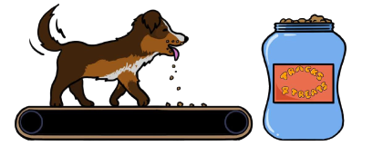
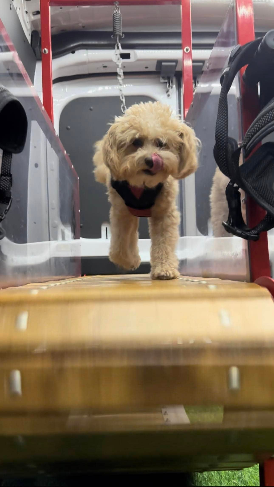
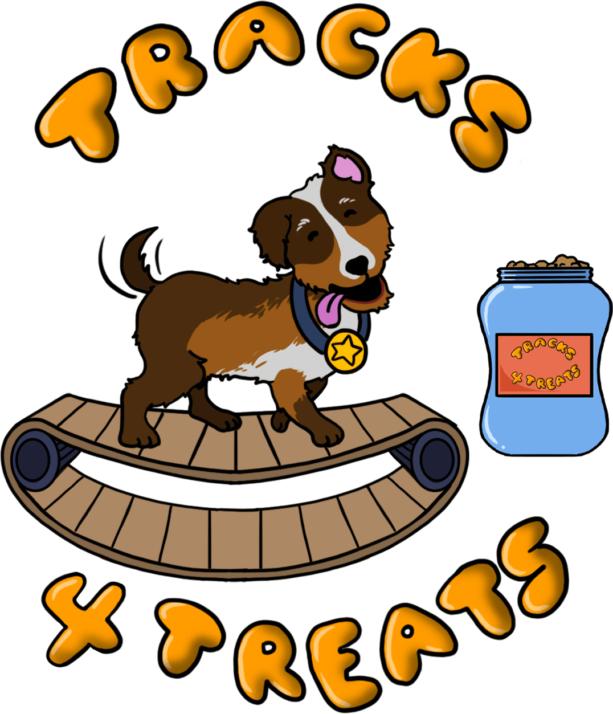
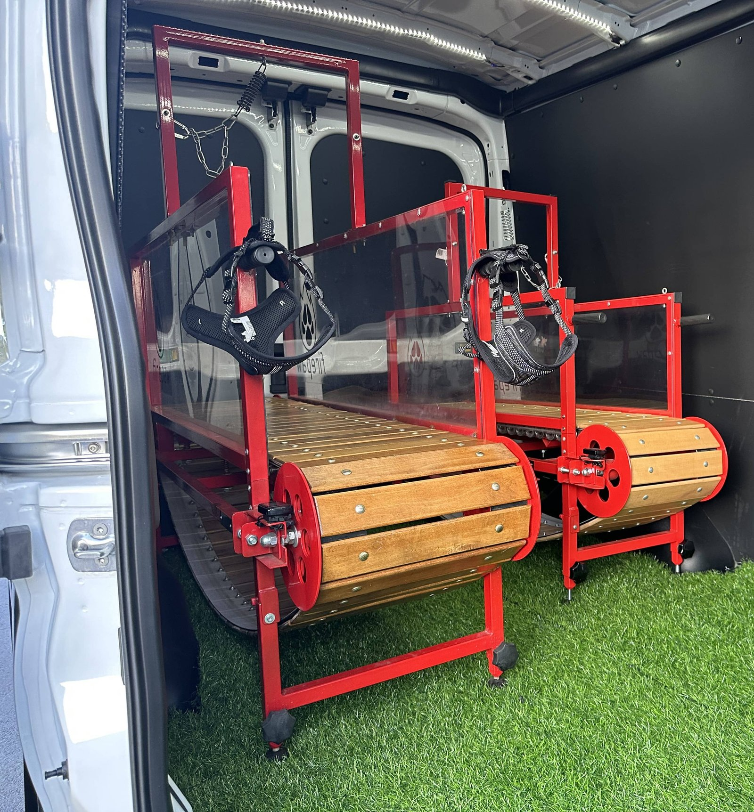
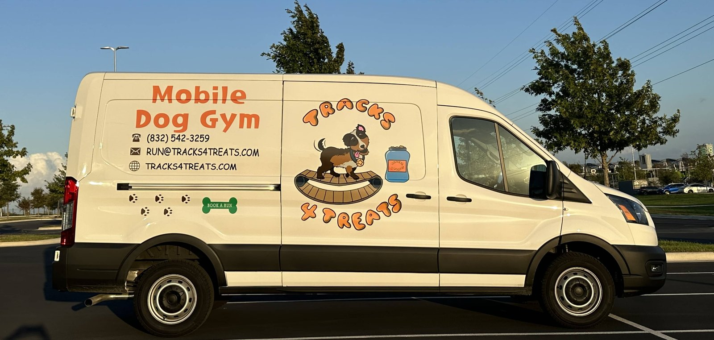

Your driveway.
Their gym.
Skip the car ride and make exercise part of your day. Our mobile gym brings the workout right to your door.

Book a run
✳ AUSTIN’S MOBILE DOG GYM
Their new favorite workout.
Your driveway. Our dog gym.
Give that boundless energy somewhere to go. A climate-controlled gym, a dedicated coach, and a run at your dog’s own pace. We come to you.
★★★★★ 5.0 · 33 reviews on Setmore20–30 minute workouts • From $60 per visit

GOOD DOGS. GREAT WORKOUTS. / 01A LITTLE MOVEMENT. A LOT OF HAPPY.
For the couch-to-zoomies crowd. The tireless fetchers. And the dogs who always have one more lap in them.
Skip the car ride and make exercise part of your day. Our mobile gym brings the workout right to your door.
A climate-controlled space means a comfortable workout away from hot pavement and outdoor distractions.
No motor setting the speed. Our dog-powered treadmills let your pup walk, jog, or run at their own pace.

LESS LOGISTICS. MORE TAIL WAGS.
Check your service area, then choose a session and an available time in our online calendar.
Your coach meets you at home and helps your dog get comfortable in the gym.
A 20–30 minute workout, at their pace. Then it’s back to you for the best part: post-run cuddles.
GOOD ENERGY. CLEAR PRICING.
One easy visit. Room for your crew.
Every option brings the gym to your door.
$60 / visit
30-minute appointment.
Book a solo run$80 / visit
30-minute appointment.
Book for two$95 / visit
30-minute appointment.
Book for three$120 / visit
60-minute appointment.
Book for fourWant a regular routine? Explore subscriptions
Confirm your service, price, and availability in the booking calendar before reserving.
AUSTIN, THIS ONE’S FOR YOUR DOG.
A mobile gym made for Austin dogs and the humans who love them. See whether we’re rolling through your neighborhood.
Monday–Friday 4:30 PM–10 PM
Saturday–Sunday 8:30 AM–10 PM

Learning something new takes a little practice. Dogs settle in at different speeds; the team typically sees them learn over 1–3 sessions. Your coach will help them get comfortable.
No. The treadmills are powered entirely by your dog’s movement, without an electric motor. Your pup decides how fast or slow to go.
Give them a bathroom break, avoid food for at least one hour before the run, and put on their harness if they have one.
Yes. You’re welcome to join your pup in the climate-controlled van during the session.
Use the rescheduling link in your appointment confirmation email. Please make changes at least four hours before your appointment.
THEIR NEXT GOOD DAY STARTS HERE.
Choose your service and find a time that fits. Your next run is just a few clicks away.
Prefer to book in a new tab?Please check your service area so we can bring the good energy to your door.